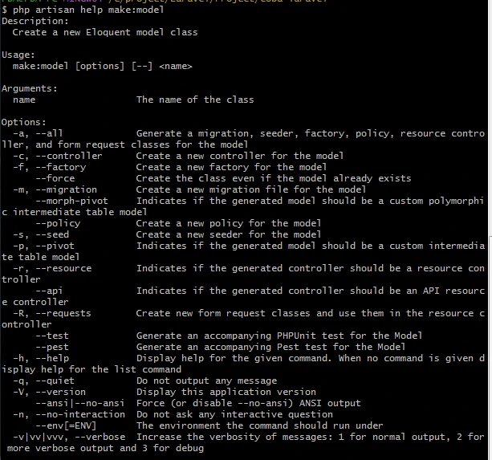
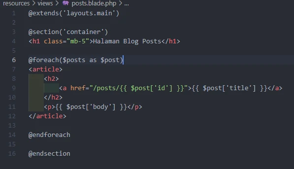

Membuat Model Post
Ubah nama app/Models/post.php menjadi app/Models/post_.php
perintah help
- setiap perintah artisan

membuat model migration
- modelnya dan migration nya dibuat
- otomatis akan dikasih nama table yang sudah jamak
- didalam folder database sudah nambah 1
- tambahkan excerpt
- excerpt : untuk menyimpan sebagian kecil dari tulisan didalam body blog kita, supaya ada tulisan remore
- ketika diclick diklik akan masuk ke detail postinganya
- timestamps : method untuk membuat created add & updated add
- timestamp : tipe data time stamp
- nullable : kosong
- kemudia kita migrasi ke database
Menambahkan beberapa post
- bikin lagi
- tampil data pertama
- mengambil judul semua data

Membenarkan modelsnya
- buka file resources/views/posts.blade.php
- ganti menggunakan notasi object

- kita sudah punya model dan controller
- tapi didalam halaman resources/views/post.blade.php
- kita menuliskan body teksnya di tag p, kedepannya mungkin saja postingan yang dikirim itu beberapa paragra
- tag p nya didalam bodynya
- hilangkan p dan notasi arraynya ganti notasi object
- coba kita masukan data yang ada tag p nya
- kita lihat diblognya
- Hasilnya seperti ini
Menghilangkan tag p
- pengen paragraf nya dijalankan
- ini karena laravelnya berusaha mengamankan isi dari variable kita didalam string blade
- jika kita pakai 2 kurung kurawal : artinya akan mencetak menggunakan PHP echo sekaligus menjalankan html specialcharts
- solusi :

menambahkan data instadari object
- Menambahkan 1 buah data dengan cara yang berbeda
- membuat instandari object terus kita isi tiap2 property nya
- pada saat kita bekerja pada form ini yang kita lakukan
- dilaravel sudah menangani MassAssignment : tidak boleh banyak property langsung dimasukin kedalam table(defaultnya tidak boleh)
- kecuali kita kasih tau bahwa porperty ini boleh diisi
- cara mengasih tau : bikin sebuah property yang namanya failable
- masuk ke App/Models/Post.php
- array karena buat ngasih tau property apa saja yang boleh diisi
- ada kebalikannya, guarded : yang tidak boleh diisi lainnya boleh
- tambah data judul ke lima
- fillable & guarded juga nanti akan terpakai kalo mau melakukan type MassAssignment yang lain selain create : update
- ini bisa berubah karena kita perbolehkan di guardednya
cara lain mengedit data
- kalo find itu : where id sama dengan berapa
- kalo where bisa pakai yang lain, misal mengubah postingan yang apa
- tulisan 1 artinya : ada 1 yang berubah

Route Model Binding
- pada saat kita menyuntikkan semua id dari model kita ke dalam route kita atau controller, kita akan melakukan query record yang kita cari berdasarkan id tadi
- laravel itu punya sebuah fitur yang namanya route model binding yang tugasnya mengskip apa yang kita lakukan tadi
- jadi si laravelnya akan langsung mengquery in supaya dapat langsung data sesuai dengan apa yang kita cari, tanpa harus kirimkan id terus kita query sendiri
- secara otomatis mengirimkan instances dari model yang sesuai
caranya
- pada saat kita akan mendapatkan sesuatu dari URL kita, biasanya kita tulisnya users/id, kita kirimkan wildcardnya begitu biasanya
- kalo dilaravel kita bisa aja langsung panggil instancenya
- kalo kita mengirimkan post kita kirimkan langsung post, klao user kita kirimkan user
- tapi didalam functionnya parameternya kita langsung type hintingnya
- kita langsung kasih type datanya bahwa dia itu adalah model yang namanya user
- {user} harus sama persis dengan $user

kita coba
- buka file web.php
- kita kirimkan post, ditangkap oleh controller kita post juga
- buka file PostController
- Post : modelnya
- variable harus sama dengan variable yang ada di web.php
- ini memungkinkan kita untuk mengirimkan data bukan lagi id
- kalo id resiko bisa ditebak oleh orang lain
cara pakai
- kita tambahkan slug
- masuk ke file migration/create_posts_table.php
- kita migration dulu
- kita tambahkan data
- tambahkan data sebanyak 3x
- sekarang kita bikin agar yang dikirimkan itu bukan id tapi slug
- kita buka halaman view post
- kalo diklik masih error karena dia masih mencari id bukan slug
- solusi : ubah web.php
- kalo post saja defaultnya akan mengirimkan id , sebagai unix identifiernya